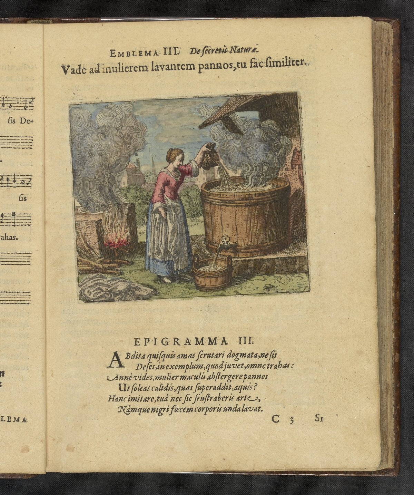

A woman kneels beside a wooden washing trough in an outdoor setting, scrubbing sheets or linens in soapy water. Her sleeves are rolled up and her posture suggests vigorous labor. A second figure, likely the alchemist-observer, watches from nearby. In the background, linens hang on a line to dry against a landscape of trees and buildings. The scene is emphatically domestic and practical, grounding the alchemical process in the imagery of common housework.
Go to the woman who washes the sheets and do as she does.
Maier argues that the alchemical purification process mirrors the everyday work of washing dirty linen: just as earth-stains on fabric are removed by water and then dried by sun and wind, so the impurities of the philosophical substance must be cleansed through repeated washing and exposure to the elements. The discourse develops the principle that what comes from earth is cleaned by the next element in the sequence — water purifies earth, air dries what water has cleaned. Maier presents the washerwoman as a figure for the alchemist who must patiently repeat the cycle of dissolution and drying, an operation the tradition calls the albedo or whitening stage.
Emblem III bears the motto: "Go to the woman who washes the sheets and do as she does."
Maier argues that the alchemical purification process mirrors the everyday work of washing dirty linen: just as earth-stains on fabric are removed by water and then dried by sun and wind, so the impurities of the philosophical substance must be cleansed through repeated washing and exposure to the elements. The discourse develops the principle that what comes from earth is cleaned by the next element in the sequence — water purifies earth, air dries what water has cleaned.
De Jong's source-critical analysis identifies the textual traditions Maier draws upon for this emblem.
De Jong identifies the motto source as Turba Philosophorum. The discourse draws on alchemical sources: Pseudo-Aristotle, Tractatulus de Practica Lapidis, Rosarium Philosophorum.
H.M.E. de Jong: Washing represents all purification processes. Removal of black (nigredo), purification to white (albedo). Medical connection to Saturn's melancholy. Relates to dyeing techniques where bleaching precedes dyeing.
Process: Albedo, Calcination (Calcinatio), Distillatio
Substance: Tinctura
Source_Text: Turba Philosophorum
Washing represents all purification processes. Removal of black (nigredo), purification to white (albedo). Medical connection to Saturn's melancholy. Relates to dyeing techniques where bleaching precedes dyeing.
Citation: Emblem III section